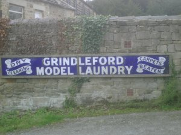

Friday, August the 13th, 2010
back to: title, date or indexes
One of the more intriguing Sherlock Holmes cases unrecorded by Dr Watson is the affair of the bogus laundry. It is mentioned in The Adventure Of The Cardboard Box, where Inspector Lestrade writes to Holmes:
“He is a big, powerful chap, clean-shaven, and very swarthy—something like Aldridge, who helped us in the bogus laundry affair.”
I suppose “laundry” here refers to the business establishment, to what we might today call a launderette, rather than to the stuff itself, cravats and sheets and shirts and socks etc. gathered in a hamper. But perhaps not. Given the wild fancies of Conan Doyle's imagination, either is possible.
And, just as the word “laundry” is open to more than one interpretation, so is “model”. What are we to make of this, recently drawn to our attention by Backwatersman?

A model laundry? Abstracted, perhaps, from a model village like Bekonscot and left to fend for itself in a Derbyshire townlet? “Come, tinies, we are going on an outing to see the model laundry!” If the hampers of laundry in the model laundry are bogus, what then? What then?
It is enough to give me a swimming in the head.